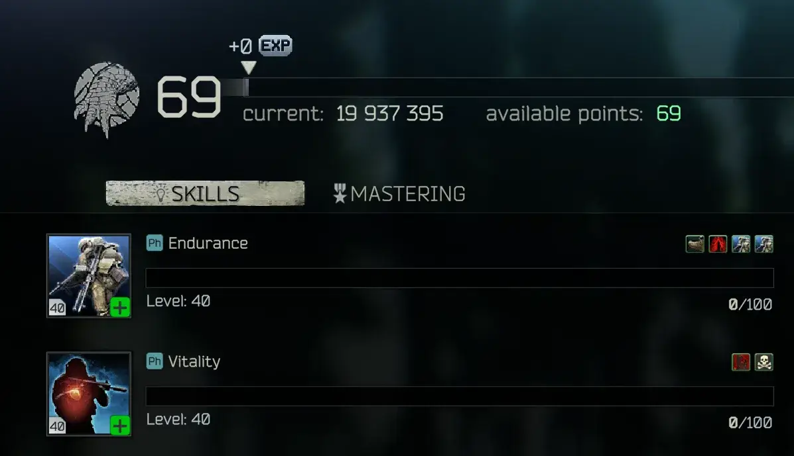

Geko's Better Progression
- Downloads
- 21,417
- Favourites
- 26
- Mod lists
- 34
What if EFT’s progression wasn’t built and balanced around the various pay-to-win editions? What if you could actually level up skills in a realistic amount of time? What if you could actually choose which ones to level up? What if trader levels were more meaningful and rewarding? What if i was in charge of how the game’s player progression worked?
This mod overhauls everything progression, from trader offerings and economy to soft skill levelling. The main design pillar was to make each and every ounce of progression more important and rewarding.
Everything is insanely customizable, the config allows to disable and configure each and every aspect of this mod down to the finest details. All config options are extensively explained by comments in the file itself. In fact the comments are so extensive that one could get a better idea of what this mod does by just reading the config file rather than this description.

Full list of features:
- Rework of secure containers
- Start with a 2x2 waist pouch
- All other containers are obtainable through quests
- Alpha has 6 slots and is obtained after completing Delivery from the Past
- Beta is rewarded for finishing Setup
- Gamma is awarded upon starting Network Provider - Part 1
- Economy changes
- FiR is removed from all aspects of the game, including quests
- The flea market only sells keys
- Hideout builds are made cheaper
- Stash progression rework
- All editions start with level 1 stash
- All stash levels are bigger (sizes are: 40, 55, 70, 85 lines)
- Stash upgrades cost less rubles and require less trader loyalty
- Skills rework
- Each PMC level you earn one skill point that you can freely allocate to any skill you want (also works retroactively on an already levelled up profile!)
- Skills passively level up overall faster than vanilla (with some exceptions like metabolism)
- Some skill bonuses are buffed like mag drills or charisma
- SPT-friendly ref rework
- Killing PMCs will award Ref reputation depending on their level
- Ref will only buy dogtags from you but he will buy them for GP coins
- Playing with “Ref - SPT Friendly Quests” and “Bosses have Lega Medals” is highly recommended
- Bitcoin changes
- Bitcoin value is fixed at around 650k (traders will buy them for around 400k)
- The bitcoin farm is slower with fewer GPUs but it’s faster if you have more. Upgrades are now more important
- GPUs cannot be purchased for currencies. You can only barter them or find them in raid
- Trader offerings are algorithmically rebalanced
- Weapons and ammo are assigned a score according to customizable rules (caliber, penetration, fire modes and so on contribute to score)
- The score will then determine at what trader level they will be unlocked
- Since this is systematic and automatic it also works with any additional traders, weapons or ammunitions
- No need to worry about installing mods that give OP weapons or ammo too early!
- With default rules this doesn’t deviate too much from vanilla EFT offerings but it does make them more consistent
- Biggest change is probably bolt-actions that are more available early on and have access to better ammo
- Quest-locked items also get unlocked at earlier levels. For example, after doing the quest, m80 will be available at tier 2 instead of 4 (default rules would consider it a tier 3 ammo but it gets bumped down to 2 because it’s quest locked)
- For details read the config file and the comments it contains
- Miscellaneous changes
- SICC container can also hold anything that the docs can on top of keytools
- All traders will start with a loyalty of 0.05 except Fence who will start at 1.00
- All crafts are twice as rewarding and twice as fast (with some exceptions)
- Stirrup awards an additional early game ammunition case
- The Streamer Items Case can be bought at Ref level 1
- Ammunition, Magazine and Med cases buffed to 8x8
- If “Pack ‘n’ Strap” and/or “Tactical Gear Component” are installed their ammo and medical pouches are made smaller and much more expensive
Many thanks to ODT and his Softcore mod for partially inspiring some of this mod’s features and providing code examples i used to learn how to mod the game
Also many thanks to marbL- for doing a majority of the porting work to SPT 4.0
This is the full 2.0 config, read it if you want the details of the mod. I would suggest downloading it and opening it in Visual Studio Code or some other editor like Notepad++. Normal notepad can work but it doesn’t make it very readable
The config file is found in the server part of the mod (inside user/mods/GekosBetterProgression in your SPT installation folder) and it’s named “config.json5”
//// GEKO'S BETTER PROGRESSION CONFIGURATION FILE ////
//
// Welcome to the config file. Nearly everything this mod does can be disabled or tweaked to your liking.
// All text after "//" in a given line is a "comment" and the mod won't read it at all, such as these lines over here
// You can find IDs for items and other things on https://moxopixel.com/tarkynator/. Failing that you can explore the SPT_Data/Server/database folder in your SPT installation to find the ID you need
// A few times "Deltas" are mentioned in this config file. Delta is a fancy word to mean "change", a negative delta will reduce a value and a positive one will increase it
// All ranges are considered to be inclusive of the lower bound but exclusive of the upper one. For example a [10, 40] range will be all values from 10 to 40 with 10 included but 40 excluded
// If you encounter any bugs please do let me know either on the GitHub page or as a comment on the SPT Hub page for the mod
//
{
//Apply changes to secure containers and the ways to obtain them
//Most safe containers have been made slightly bigger (2 to 4 extra slots on each)
//Alpha is obtainable from Delivery from the Past
//Beta is obtainable from Setup
//Gamma is obtainable from accepting Network Provider - Part 1
"secureContainerProgression": {
"enable": true,
//Set the container you start a new profile with. Doesn't work if mod gets added after the profile has already been created, please start fresh
"starterContainer": "5732ee6a24597719ae0c0281", //Waist Pouch
//Set the grid sizes of each container. The format for each is [ [*grid 1 width*, *grid 1 height*], [*grid 2 width*, *grid 2 height*] ] and so on for any amount of grids.
//Grids will be laid out horizontally in the game no matter what so don't go too crazy
"sizeChanges": {
"544a11ac4bdc2d470e8b456a": [[2,2], [1,1]], //Alpha
"5857a8b324597729ab0a0e7d": [[3,2]], //Beta
"59db794186f77448bc595262": [[4,2]], //Epsilon
"5857a8bc2459772bad15db29": [[3,3]], //Gamma
"5c093ca986f7740a1867ab12": [[3,4]] //Kappa
}
//More options can be found in the advanced config folder in the secureChanges.json5 file
},
//This mod is intended to (and balanced around) playing without the flea market. Change this setting at your own peril!
"fleaMarketChanges": {
"disableFleaMarket": true,
//If true, keys that are tradable on the flea market by default will still be tradable even if disableFleaMarket is true
"stillAllowKeys": true,
//Even if the flea market is disabled the following items will still be sold (and sellable) on it
"fleaWhitelist": [
]
},
//Reduce the amounts of items required by each hideout upgrade. All items required beyond a certain threshold will be multiplied by the given factor. Only the amount that goes past the threshold is mutliplied
//For example if the threshold is 3 and the factor is 0.5 if a build would require 15 (= 3 + 12) nuts it will instead require 3 + (12 * 0.5) = 9 nuts
"hideoutBuildsChanges": {
"enable": true,
"threshold": 3,
"factor": 0.5,
"roundDown": true
},
//Stash changes
"stashProgression" : {
"enable": true,
//What stash level should a new profile start with?
"startingStashLevel": 1,
//Amount of lines in each stash level
"stashSizes": [40, 55, 70, 85, 100],
//Multiply ruble cost of each stage of stash upgrade by this much
"stashUpgradeCostFactor": 0.4,
//Change loyalty requirements for stash upgrades by this much
"stashUpgradeLoyaltyDelta": -1
},
//Make skill xp gain faster and buff some skill bonuses
//Also optionally adds a system that provides skill points that can be freely allocated as you level up your PMC
"skillChanges": {
"enable": true,
//Multiply earned skill XP by this much if it's fresh XP (XP for a skill you haven't leveled recently this raid)
"skillFreshEffectiveness": 2,
//How many full skill points are considered to be fresh before going back to normal XP earn rates
"skillFreshPoints": 2,
//After this many points have been earned at a normal XP rate (so after the fresh points) skill fatigue kicks in
"skillPointsBeforeFatigue": 1,
//Skill fatigue gradually reduces XP earned down to a minimum multiplier that is specified here
"skillMinEffectiveness": 0.4,
//Multiply the amount of XP gained for each skill and/or the effectiveness of the various skill buffs
"customMultipliers": {
//Flat out multiply the amount of xp earned for skills
"globalXPMultiplier": 1,
//Specific multipliers per-skill. If unspecified it's considered to be 1
//Both global and specific multipliers apply, this does NOT override the global
"skillXPMultipliers": {
"Metabolism" : 0.125,
"Charisma": 0.7
},
//Multiply the buff effect of specific skill buffs
"skillBuffMultipliers": {
"StrengthBuffLiftWeightInc": 2.5,
"MagDrillsLoadSpeed": 2,
"MagDrillsUnloadSpeed": 3,
"MagDrillsInventoryCheckSpeed": 2,
"CharismaDailyQuestsRerollDiscount": 10,
"CharismaHealingDiscount": 10,
"CharismaInsuranceDiscount": 10,
"CharismaExfiltrationDiscount": 10,
"SurgeryReducePenalty": 2,
"SurgerySpeed": 2,
"SearchSpeed": 1.5
//Complete list of all buffs that can be modified:
//EnduranceBuffEnduranceInc
//EnduranceBuffJumpCostRed
//EnduranceBuffBreathTimeInc
//EnduranceBuffRestorationTimeRed
//EnduranceBreathElite
//EnduranceHands
//StrengthBuffLiftWeightInc
//StrengthBuffSprintSpeedInc
//StrengthBuffJumpHeightInc
//StrengthBuffThrowDistanceInc
//StrengthBuffMeleePowerInc
//StrengthBuffElite
//StrengthBuffMeleeCrits
//StrengthBuffAim
//VitalityBuffBleedChanceRed
//VitalityBuffSurviobilityInc
//VitalityBuffRegeneration
//VitalityBuffBleedStop
//HealthBreakChanceRed
//HealthOfflineRegenerationInc
//HealthEnergy
//HealthHydration
//HealthEliteAbsorbDamage
//HealthElitePosion
//StressPainChance
//StressTremor
//StressBerserk
//MetabolismRatioPlus
//MetabolismEnergyExpenses
//MetabolismPhysicsForget
//MetabolismPhysicsForget2
//MetabolismEliteBuffNoDyhydration
//MetabolismEliteNoForget
//PerceptionHearing
//PerceptionFov
//PerceptionLootDot
//PerceptionmEliteNoIdea
//IntellectLearningSpeed
//IntellectWeaponMaintance
//IntellectEliteNaturalLearner
//IntellectEliteAmmoCounter
//IntellectEliteContainerScope
//IntellectRepairPointsCostReduction
//AttentionLootSpeed
//AttentionRareLoot
//AttentionEliteLuckySearch
//AttentionEliteExtraLootExp
//MagDrillsLoadSpeed
//MagDrillsUnloadSpeed
//MagDrillsInventoryCheckSpeed
//MagDrillsInventoryCheckAccuracy
//MagDrillsInstantCheck
//MagDrillsLoadProgression
//CharismaBuff1
//CharismaBuff2
//CharismaEliteBuff1
//CharismaEliteBuff2
//CharismaDailyQuestsRerollDiscount
//CharismaHealingDiscount
//CharismaInsuranceDiscount
//CharismaExfiltrationDiscount
//CharismaScavCaseDiscount
//CharismaFenceRepPenaltyReduction
//CharismaAdditionalDailyQuests
//WeaponReloadBuff
//WeaponRecoilBuff
//WeaponSwapBuff
//DrawSpeed
//DrawElite
//DrawTremor
//DrawSound
//AimMasterElite
//AimMasterWiggle
//AimMasterSpeed
//RecoilControlImprove
//RecoilControlElite
//CovertMovementSoundVolume
//ProneMovementSpeed
//ProneMovementVolume
//ProneMovementElite
//TroubleFixing
//TroubleFixingAmmoElite
//TroubleFixingExamineMalfElite
//WeaponErgonomicsBuff
//WeaponDoubleMastering
//WeaponDoubleActionRecoilReduceBuff
//WeaponStiffHands
//ThrowingStrengthBuff
//ThrowingEnergyExpenses
//ThrowingWeaponsBuffElite
//CovertMovementSpeed
//CovertMovementElite
//CovertMovementLoud
//CovertMovementEquipment
//SearchSpeed
//SearchDouble
//SurgeryReducePenalty
//SurgerySpeed
//HideoutResourceConsumption
//HideoutZoneBonusBoost
//HideoutExtraSlots
//CraftingElite
//CraftingSingleTimeReduce
//CraftingContinueTimeReduce
//MetabolismPoisonTime
//MetabolismMiscDebuffTime
//ImmunityMiscEffects
//ImmunityPoisonBuff
//ImmunityPainKiller
//ImmunityPoisonChance
//ImmunityMiscEffectsChance
//WeaponDurabilityLossOnShotReduce
//WearAmountRepairGunsReducePerLevel
}
},
//Earn a customizable amount of freely allocatable skill points with each PMC level
"skillPointsSystem": {
"enable": true,
//Decimal values are fine. An extra point will be awarded when the decimal part ticks over 1. For example 1.5 points per level means that every other level you'll get 2 points instead of 1
"skillPointsPerLevel": 1,
//The game keeps track of skill levels behind the scenes even when you got past level 51. If this is true any point allocated into a skill that is level 51 will be refunded as the skill naturally keeps leveling up.
//This keeps going until the skill reaches level 51 "naturally" without the help of the skill points
//For example say that you have a skill at level 51 out of which 40 are naturally earned levels and 11 have been allocated with this system.
//Then as the skill continues to overlevel past 51 (which is the cap) you will gradually get your 11 points back if this option is set to true
"automaticallyRefundOverflows": true,
//If true, players can freely deallocate invested points. I suggest keeping this off as it otherwise encourages moving skill points around constantly
"enableDeallocation": false
}
},
//A series of changes that make Ref work much better in SPT by tying him to PMC kills
//The mods "Bosses Have Lega Medals" and "Ref - SPT Friendly Quests" are STRONGLY reccomended, this section is ment to complement those two
//Bosses Have Lega Medals: https://hub.sp-tarkov.com/files/file/2109-bosses-have-lega-medals/
//Ref - SPT Friendly Quests: https://hub.sp-tarkov.com/files/file/2108-ref-spt-friendly-quests/
"refChanges": {
"enable": true,
//If true, Ref will buy items for GP coins instead of RUB
//I strongly reccomend keeping refOnlyBuysDogtags to true if you intend on keeping this option enabled
"refBuysInGPCoins": true,
//Ref won't buy anything except dogtags (and Lega Medals if enabled)
"refOnlyBuysDogtags": true,
"refAlsoBuysLegaMedals": true, //Works regardless of the value of the previous option
//Gain standing/rep for Ref every time you get a PMC kill
"refStandingOnKill": {
"enable": true,
//Amount of standing/rep to be gained depending on the level of the player killed
"repByKillLevel": [
{
"levelRange": [0, 10],
"rep": 0.003
},
{
"levelRange": [10, 30],
"rep": 0.004
},
{
"levelRange": [30, 50],
"rep": 0.006
},
{
"levelRange": [50, 9999],
"rep": 0.01
}
]
}
},
//A series of buffs to the SICC container
"siccBuffs": {
"enable": true,
//SICC will be able to hold everything that the Docs case can (on top of what the SICC already can carry)
"canHoldWhatDocsCan": true,
//Additional items that can be put in a SICC case
"additionalWhitelistedItems": [
"59fafd4b86f7745ca07e1232" //Key tool
]
},
//A variety of changes to bitcoin farming. The defualt configuration is aimed at making bitcoin farming less powerful to start with but more powerful at high GPU counts
//Keep in mind that with the rest of the mod with default settings GPUs will be much harder to obtain than normal, which is intended and accounted for in the balancing of this part
"bitcoinChanges": {
"enable": true,
//Remove all non-barter trades for GPUs
"cannotBuyGPU": true,
//Should the value of a BitCoin be overridden to be a set value?
"overrideValue": true,
"value": 648000, //This is the actual item value. Traders will buy them at a lower amount since they never pay full price for items
//Desmos graph to visualize the following two values: https://www.desmos.com/calculator/osralvxw4g
//Flatly multiply the rate of btc produced by this much (variable m in Desmos)
"btcFarmSpeedMult": 0.68,
//How effective is each GPU in boosting the production rate (variable E in Desmos)
"gpuBoostRate": 0.164,
//How many bitcoins fit in the bitcoin farm
"btcCapacity": 5
},
//Change initial trader reputation
"overrideInitialStanding": {
"enable": true,
//Default starting reputation
"defaultOverride": 0.05,
//Change the default stating on a per-trader basis
"individualOverrides": {
"579dc571d53a0658a154fbec": 1 //Fence
}
},
//Miscellaneous changes
"misc": {
//Remove Found in Raid requirements from various places
"removeFirFromQuests": true,
"removeFirFromHideout": true,
"removeFirFromFlea": true,
//Multiply amounts of crafted products and crafting times in hideout
"craftProductMultiplier": 2,
"craftTimeMultiplier": 0.5,
//Enable the additional quest rewards (separate from secure containers quest rewards)
//More settings can be found in the advanced/additionalQuestRewards.json5 config file
"enableExtraQuestRewards": true,
//Enable or disable the custom trades defined in the advanced config customTrades.json5
"addCustomTrades": true,
//Change maximum stack size for the given items
"stackSizeOverride": {
//Special items used in quests
//Unfortunately BSG's spaghetti code makes it so that placing one of these consumes the entire stack instead of just one unit so i disabled the changes. Feel free to re-enable them if you still want them
//To do so remove the "//" at the start of the desired lines
//"5991b51486f77447b112d44f": 3, //MS2000 Marker
//"5ac78a9b86f7741cca0bbd8d": 3, //Signal Jammer
//"5b4391a586f7745321235ab2": 3, //Wi-fi Camera
//Others
//"6656560053eaaa7a23349c86": 5, //Lega Medals
},
//Change sizes of containers
"containerSizeChanges": {
"enable": true,
"changes": {
//Vanilla items
"5aafbde786f774389d0cbc0f": [8, 8], //Ammunition case buff from 7x7 to 8x8
"5c127c4486f7745625356c13": [8, 8], //Magazine case buff from 7x7 to 8x8
"5aafbcd986f7745e590fff23": [8, 8], //Medicine case buff from 7x7 to 8x8
//WTT-Pack 'n' Strap items (does nothing if mod is not installed)
"12403f74773f49be6a2d84b7": [2, 3], //Small Medical Pouch nerf down to 2x3
"ae9e418fd5d4c4eec4a0e6ea": [2, 2], //Small Ammunition Pouch nerf down to 2x2
//Tactical Gear Component items (does nothing if mod is not installed)
"672e2e7526ba61dbb88be7ff": [4, 2], //TGC First Aid container nerf down to 4x2
"672e2e758808bacbb9d5abc4": [2, 3] //TGC Ammo Pouch nerf down to 2x3
}
},
//Change the price of items that are sold for rubles
"priceChanges": {
//WTT-Pack 'n' Strap items (does nothing if mod is not installed)
"12403f74773f49be6a2d84b7": 1442000, //Small Medical Pouch
"ae9e418fd5d4c4eec4a0e6ea": 620920, //Small Ammunition Pouch
//Tactical Gear Component items (does nothing if mod is not installed)
"672e2e7526ba61dbb88be7ff": 6080000, //TGC First Aid container
"672e2e758808bacbb9d5abc4": 3880000 //TGC Ammo Pouch
}
},
//Module responsible for algorithmically rebalancing most military items in the game
//This module calculates a loyalty score for each item that can also be decimal. The actual in-game loyalty level of the item will be the floor of the loyalty score. So for example a loyalty score of 3.8 will correspond to loyalty level 3
//The exact way in which this works will become more apparent by looking at the specific rules for each class of items (for example the ammoRules)
"algorithmicalRebalancing": {
"enable": true,
//If false, items that end up having a loyalty score greater or equal than 5 will be hidden (level >4 traders do not exist)
//If it's true items with loyalty over 4 will be brought back to 4
"clampToMaxLevel": true,
//If true, all trades that are locked behind quests will be treated as if "clampToMaxLevel" is true rgardless of its actual value
//If this is false then some quest-locked items could potentially be unobtainable even when unlocked since they would end up at loyalty level 5+
"forceClampingOfQuestlockedItems": true,
//Change the loyalty score of all items this mod affects (for example barter items are unaffected) by this much if the item trade is a barter or if it's quest locked
"barterDelta": -0.7,
"questLockDelta": -1,
"logBartersAndLocks": false, //For debugging
//Traders that will not be affected by the rebalancing module
"excludeTraders": [
"579dc571d53a0658a154fbec" //Fence
],
//Modify the loyalty score of all offers on the given trader. Only affects items that are already being algorithmically rebalanced (ammo, wepaons)
"deltaByTrader": {
"6617beeaa9cfa777ca915b7c": -0.7 //Ref
},
//Ammo rebalancing module
"ammoRules": {
"enable": true,
"logChanges": false, //For debugging
//Change every ammunition loyalty level by this much
"globalDelta": 0,
//If an ammunition falls between the ammunition ranges specified here then it will get the corresponding base loyalty score
//Loyalty score is then further modified by the other rules
"defaultBaseLoyaltyByPen": 1,
"ammoBaseLoyaltyByPen": [
{
"penInterval": [0, 14],
"baseLoyalty": 0.5
},
{
"penInterval": [14, 17],
"baseLoyalty": 1
},
{
"penInterval": [17, 21],
"baseLoyalty": 1.5
},
{
"penInterval": [21, 27],
"baseLoyalty": 2
},
{
"penInterval": [27, 31],
"baseLoyalty": 2.6
},
{
"penInterval": [31, 37],
"baseLoyalty": 3
},
{
"penInterval": [37, 41],
"baseLoyalty": 3.7
},
{
"penInterval": [41, 47],
"baseLoyalty": 4
},
{
"penInterval": [47, 99999],
"baseLoyalty": 5
}
],
//Modify the loyalty score of an ammunition depending on its caliber
"caliberRules": [
{
"caliber": "Caliber12g",
"loyaltyDelta": -2
},
{
"caliber": "Caliber762x54R",
"loyaltyDelta": -2
},
{
"caliber": "Caliber762x39",
"loyaltyDelta": 0
},
{
"caliber": "Caliber762x51",
"loyaltyDelta": -1
},
{
"caliber": "Caliber20g",
"loyaltyDelta": -3
},
{
"caliber": "Caliber366TKM",
"loyaltyDelta": -0.6
},
{
"caliber": "Caliber9x19PARA",
"loyaltyDelta": 1.4
},
{
"caliber": "Caliber9x18PM",
"loyaltyDelta": 1
},
{
"caliber": "Caliber127x55",
"loyaltyDelta": -1
},
{
"caliber": "Caliber9x21",
"loyaltyDelta": 0.5
},
{
"caliber": "Caliber752x25TT",
"loyaltyDelta": 0.5
},
{
"caliber": "Caliber86x70",
"loyaltyDelta": -2
},
{
"caliber": "Caliber556x45NATO",
"loyaltyDelta": 0.4
},
{
"caliber": "Caliber545x39",
"loyaltyDelta": 0.3
},
{
"caliber": "Caliber127x33",
"loyaltyDelta": -0.5
}
],
//If the damage of an ammunition falls within one (or more) of the intervals then its loyalty score will be modified by the corresponding delta
"damageRules": [
{
"damageInterval": [85, 90],
"loyaltyDelta": 0.5
},
{
"damageInterval": [90, 100],
"loyaltyDelta": 1
},
{
"damageInterval": [100, 120],
"loyaltyDelta": 1.5
},
{
"damageInterval": [120, 255],
"loyaltyDelta": 2
},
{
"damageInterval": [255, 360],
"loyaltyDelta": 3
},
{
"damageInterval": [360, 9999],
"loyaltyDelta": 4
}
],
//Disable the ammo balancing module on the following calibers
"ignoreCalibers": [
"Caliber26x75" //Flare gun
],
//Settings specific to hideout crafts of ammo
"craftSettings": {
//If disabled ammo crafts will not be changed by this mod
"enable": true,
//If loyalty score falls between the given ranges then the ammunition craft will end up in the corresponding workbench level
"loyaltyToLevelRanges": [
{
"range": [-9999, 2.5],
"level": 1
},
{
"range": [2.5, 3.5],
"level": 2
},
{
"range": [3.5, 9999],
"level": 3
}
]
}
},
//Weapons rebalancing module
"weaponRules": {
"enable": true,
"logChanges": false, //For debugging
//Change every weapon loyalty level by this much
"globalDelta": 0,
//All weapons will bring all of their default parts to their same loyalty level. If multiple weapons share the same default parts the lowest level is picked
//For example if this is true the default m4 gas block will always be found on the same loyalty level as the m4
"attachmentsFollowDefaultBuild": true,
//Add this delta if the weapon contains any attachments that cannot be purchased at the trader level the weapon would otherwise be placed at
//Won't affect attachments that are part of the default build of the weapon
//If attachmentsFollowDefaultBuild is set to false i reccomend setting this to 0
"advancedAttachmentsDelta": 1,
//Base loyalty score of each weapon is decided by its caliber. If the caliber of the weapon is not listed below then the default value will be picked
//Loyalty score is then further modified by the other rules
"defaultBaseLoyalty": 2,
"weaponBaseLoyaltyByCaliber": [
{
"caliber": "Caliber762x51",
"baseLoyalty": 3.8
},
{
"caliber": "Caliber556x45NATO",
"baseLoyalty": 3
},
{
"caliber": "Caliber545x39",
"baseLoyalty": 3
},
{
"caliber": "Caliber762x39",
"baseLoyalty": 3
},
{
"caliber": "Caliber57x28",
"baseLoyalty": 2.5
},
{
"caliber": "Caliber46x30",
"baseLoyalty": 2.5
},
{
"caliber": "Caliber9x19PARA",
"baseLoyalty": 1
},
{
"caliber": "Caliber366TKM",
"baseLoyalty": 2
},
{
"caliber": "Caliber9x39",
"baseLoyalty": 2.5
},
{
"caliber": "Caliber127x55",
"baseLoyalty": 3.5
},
{
"caliber": "Caliber23x75",
"baseLoyalty": 5
},
{
"caliber": "Caliber9x18PM",
"baseLoyalty": 1
},
{
"caliber": "Caliber9x18PMM",
"baseLoyalty": 1
},
{
"caliber": "Caliber762x25TT",
"baseLoyalty": 1
},
{
"caliber": "Caliber86x70",
"baseLoyalty": 6
},
{
"caliber": "Caliber1143x23ACP",
"baseLoyalty": 2
},
{
"caliber": "Caliber762x54R",
"baseLoyalty": 3.5
},
{
"caliber": "Caliber68x51",
"baseLoyalty": 4.9
},
{
"caliber": "Caliber127x33",
"baseLoyalty": 4
},
{
"caliber": "Caliber12g",
"baseLoyalty": 3.7
},
{
"caliber": "Caliber762x39",
"baseLoyalty": 3
}
],
//Modify the loyalty score depending on the BEST fire mode available to the weapon
//Manual includes bolt-action, pump-action and single-shot
//Semiauto includes semi automatic, double-action and double barrel
//Fullauto and burst are self-explanatory
"fireModeRules": [
{
"mode" : "manual",
"delta" : -2
},
{
"mode" : "semiauto",
"delta" : -1
},
{
"mode" : "burst",
"delta" : -0.5
},
{
"mode" : "fullauto",
"delta" : 0
}
],
//If the fire rate of a weapon falls within one (or more) of the intervals then its loyalty score will be modified by the corresponding delta
//THIS ONLY AFFECTS FULL AUTO AND BURST WEAPONS
"fireRateRules": [
{
"rateInterval": [0, 620],
"delta": -0.7
},
{
"rateInterval": [620, 760],
"delta": -0.5
},
{
"rateInterval": [900, 99999],
"delta": 1
}
],
//If multiple weapons share the same niche then the better ones will be upshifted to higher trader levels (how a niche is defined is configurable below)
//For example if both the UMP and the Vector.45 happen to both fall into loyalty level 3 then the Vector will be upshifted to level 4 (if the power level rules below define the Vector as a better weapon than the UMP and with default niche definition)
//Loyalty level for shifting is checked after all other rules have already been applied.
//The shifting applies recursively. This means that if, for example, three weapons of three different power levels all share the same niche and loyalty level then one will stay at that level, one will be shifted once and the other will be shifted twice
"upshiftRules": {
"enable": true,
"shiftAmount": 1,
//If true, the worse weapon will be shifted down instead of the better one being shifted up
"shiftDownInstead": false,
//How is a wapon niche defined for shifting?
"devideNicheByFiremode": true, //If true, weapons of different fire modes will be considered as parts of different niches. Only cares about the best available fire mode and only considers "manual", "semi auto", "burst" and "fullauto"
"devideNicheByCaliber": true, //If true, weapons of different calibers will be considered as parts of different niches
"devideNicheByBarterType": true, //If true, items sold for currency and items recieved from barters will be considered of two different niches
"devideNicheByQuestLock": true, //If true, items locked behind quests and items that aren't so will be considered of two different niches
//Power levels of weapons. This is used to determine which weapons are better than which others. Has only meaning in a relative sense (to define an order between weapons of same niche), the absolute value is meaningless.
//For example if we want to define the Vepr Hunter as a weaker weapon compared to the RSASS we only need to set their power levels so that the VPO's is lower, the actual numbers don't matter
//Once again, the power level is compared for a possible shift only between weapons that share the same caliber AND fire mode AND loyalty level (with default niche settings)
//For example the power level of the Vepr Hunter will never compared to that of the SCAR-H nor that of the STM-9
//If two weapons in the same niche and loyalty level have the same power level then neither will be shifted
"powerLevels": {
//// SEMI-AUTO 7.62x51 ////
"5c501a4d2e221602b412b540" : 1, //Vepr Hunter
"5f2a9575926fd9352339381f" : 2, //RFB
"5aafa857e5b5b00018480968" : 2, //M1A
"6176aca650224f204c1da3fb" : 3, //G28
"5a367e5dc4a282000e49738f" : 3, //RSASS
"5df8ce05b11454561e39243b" : 3, //SR-25
//// FULL-AUTO SHOTGUNS ////
"66ffa9b66e19cc902401c5e8": 1, //AA-12 Gen 1
"67124dcfa3541f2a1f0e788b": 1, //AA-12 Gen 2
"674fe9a75e51f1c47c04ec23": 2, //Auto Saiga-12k
//// FULL-AUTO 3x39 ////
"644674a13d52156624001fbc": 1, //9A-91
"645e0c6b3b381ede770e1cc9": 2, //VSK-94
"57838ad32459774a17445cd2": 3, //VSS
"57c44b372459772d2b39b8ce": 4, //AS-VAL
"651450ce0e00edc794068371": 4, //SR-3M
//// BOLT-ACTION 7.62×51 ////
"5bfea6e90db834001b7347f3": 1, //M700
"5df24cf80dee1b22f862e9bc": 2, //T-5000M
"588892092459774ac91d4b11": 3, //DVL
//// FULL-AUTO 9x19 ////
"5926bb2186f7744b1c6c6e60": 1, //MP5
"66992b349950f5f4cd06029f": 1, //Uzi
"58948c8e86f77409493f7266": 2, //MPX
"6680304edadb7aa61d00cef0": 2, //Uzi-pro
"668e71a8dadf42204c032ce1": 2, //Uzi-pro SMG
//// BOLT-ACTION 7.62x54R ////
"5ae08f0a5acfc408fb1398a1": 1, //Mosin
"5bfd297f0db834001a669119": 1, //Mosin infantry
"55801eed4bdc2d89578b4588": 2, //SV-98
//// FULL-AUTO 7.62x51 ////
"5b0bbe4e5acfc40dc528a72d": 1, //SA58
"5dcbd56fdbd3d91b3e5468d5": 2, //Black MDR
"6165ac306ef05c2ce828ef74": 2, //Scar-H (FDE)
"6183afd850224f204c1da514": 2, //Scar-H
"676176d362e0497044079f4c": 3, //Scar-H X-17
//// .45 PISTOLS ////
"5e81c3cbac2bb513793cdc75": 1, //m1911
"6193a720f8ee7e52e42109ed": 2 //USP .45
}
}
},
//Modify loyalty score of the given items by the given amount
//This only affects items that are already affected by at least one other algorithmical rebalancing module (so items such as ammo if ammo rebalancing is enabled)
"explicitLoyaltyDelta": {
//ID of the specific trade, NOT the id of the item being sold
"trades": {
},
//ID of the item being sold
"items": {
"57dc2fa62459775949412633": -0.7, //AKS-74U
"583990e32459771419544dd2": -0.7, //AKS-74UN
"5839a40f24597726f856b511": -0.7, //AKS-74UB
"62e7c4fba689e8c9c50dfc38": -1, //AUG A1
"61f7c9e189e6fb1a5e3ea78d": -2, //MP-18
"606587252535c57a13424cfd": 1, //Mutant
"5bb2475ed4351e00853264e3": 1, //HK 416A5
"6513ef33e06849f06c0957ca": 1, //RPD
"65268d8ecb944ff1e90ea385": 2, //RPDN
"60db29ce99594040e04c4a27": -1, //Revolving shotgun
"5580223e4bdc2d1c128b457f": -2, //MP-43
"5bfd297f0db834001a669119": -1, //Mosin infantry
"6499849fc93611967b034949": 0.7, //Ak-12
"628a60ae6b1d481ff772e9c8": 0.7, //RD-704
"576165642459773c7a400233": 1, //Saiga-12k
"674fe9a75e51f1c47c04ec23": 1 //Saiga-12k automatic
}
},
//Ignore all previous calculations and set the given items or trades to the given levels
//Items and trades specified here will also be ignored by all other systems (for example they won't count for the shifting system)
"explicitLoyaltyOverride": {
//ID of the specific trade, NOT the id of the item being sold
"trades": {
},
//ID of the item being sold
"items": {
"627e14b21713922ded6f2c15": 4 //AXMC
}
}
},
//Development options
"dev": {
//Hide info logging of each change being applied when mod is loading
"muteProgressOnServerLoad": false,
//When an error occurs show the whole error message
"showFullError": true
}
}
I’ve received some reports of Friendly PMCs causing a very weird incompatibility with my mod
Some mods like AmandsSense 2.0 use flea availability to assign a value to items, making unpurchasable items count as very valuable. Since my mod bans most items from the flea market that behavior will be broken and will tag all items as very valuable and you may want to check the other’s mod config to fix that. Beyond that no incompatibility is known
FIKA compatibility is being actively tested, please do report your experiences with it and this mod (both positive and negative)
Raid Overhaul’s DisableFleaBlacklist will make it so that any item will be purchasable on the flea, overriding the flea disabling module of this mod
“Ref - SPT Friendly Quests” and “Bosses have Lega Medals” are highly recommended for use together with this mod
If you’re gonna use “WTT - Pack ‘n’ Strap” please do change its config so that you lose belts on death otherwise they act as better and cheaper safe containers, breaking the progression system i built. With default configs my mod makes med pouches and ammo pouches from both “WTT - Pack ‘n’ Strap” and “Tactical Gear Component” nerfed to be much smaller and much more expensive to buy
For a full list of mods i recommend (regardless of whether you’re using this one or not) check this out
Like any other mod you simply need to unzip the files into your SPT folder. This mod is technically split into a server mod and a client mod but you don’t need to concern yourself with that, just move both the BepInEx folder and the user folder in your installation. The config is found in the server mod (inside user/mods/GekosBetterProgression/config)
If you want to try the mod in a way that almost resembles a hardcore run i suggest heading into the config and in the algorithmicalRebalancing settings bumping up the globalDelta for both weapon and ammo rules to 1 (or even more if you’re sadistic). This will make it so that at tier 1 you’ll only have access to the worse weapons and ammunitions the game has to offer, mostly pistols. You can pair that with clampToMaxLevel to false. You could also make the global even higher and compensate it with a bigger negative barterDelta if you like the game to be more barter-centric with currency trades only available at later tiers and for worse items
If you do any of that i would also suggest emptying out your stash at the start
You could also try pairing this mod with “Bronzeman”, i haven’t personally tried if they work together but i don’t see why not and they should pair nicely
Version
2.0.1
Changelog:
- Various improvements to error logging and handling to improve compatibility with other mods
- Changed load order to improve compatibility with other mods
Version
2.0.0
Mega thanks to marbL- for doing a majority of the porting work
Changelog:
- Ported the mod to SPT 4.0.X
- Various fixes and improvements
- Rebalanced container sizes to be closer to vanilla to account for surgery kits in special slots
- Excluded more crafts from being affected by the multiplier to craft speed and craft outputs
Version
1.1.3
- Improved error handling in the case of some other mod adding a trade for an item that doesn’t exist
Version
1.0.1
- Fixed a breaking bug with FiR requirements in repeatable quests
- Now requires SPT 3.11.1 or above (3.11.0 is no longer supported)